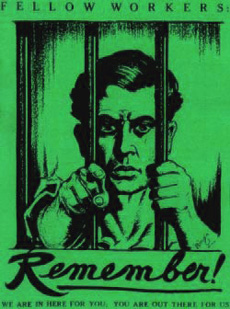

Submitted on Sat, 07/30/2005 - 12:53am
By Shay Totten | Vermont Guardian
posted July 29, 2005
Vermont, the home of Ethan Allen and the Green Mountain Boys. That’s the history many schoolkids learn year after year, and it’s one that is often invoked by politicians, thinkers, and op-ed writers.
Yet, there is a separate, but distinct, history more than a century after the Allen boys that took shape in and around the granite quarries of Barre — the Italian socialist and anarchist granite workers who were not only unionized, but upon whose backs were spawned Vermont’s major export products.
At the center of this history is Barre’s Old Labor Hall, which sits squarely in what was known as the “Socialist Block.” An illustration of the spirit of the era is best captured in a preserved photograph, which shows a crowd of people inside the hall flanked by wall portraits of Karl Marx. During its heyday, people gathered to eat, dance, and hear the renowned speakers of the day — Samuel Gompers, Eugene Debs, Mother Jones, Emma Goldman, and Joseph Etter, to name a few.
The union members during the early 1900s were not only civic minded, but politically motivated.
Submitted on Wed, 07/27/2005 - 12:06am
 We can all agree that the AFL-CIO, and business unionism in general, is a dead-end for the working class in North America. We need a new international labor movement; one that is based on workers’ self-organization and on the recognition of the inevitable conflict between labor and capital.
We can all agree that the AFL-CIO, and business unionism in general, is a dead-end for the working class in North America. We need a new international labor movement; one that is based on workers’ self-organization and on the recognition of the inevitable conflict between labor and capital.
We of the Industrial Workers of the World (IWW) have stayed close to our roots and feel that we have some ideas and lessons, learned from bitter experience, for such a new labor movement. We feel that a new labor movement will have to return to the strategies and tactics of the workers’ movement before it’s decent into the bureaucratic quagmire of business unionism if it is to go forward.
We have a few suggestions on how to proceed:
- Organize the unorganized into self-managed industrial unions. Unions built from the grass-roots by worker organizers. Unions run by the membership to address their own needs and aspirations on the job. Unions that are independent of government and political parties. Unions that welcome all wage workers and unemployed, regardless of nationality, race, gender, political or religious creed, sexual orientation, etc, on the basis of strict equality. Unions in which all officers are directly elected by those they serve and are immediately recallable by the membership. Unions in which remuneration for officers is tied to the average wage of the workers involved; where term limits for officers are strictly observed; and, where the officer returns to the job when their term in office is over. We call this Solidarity Unionism.
- Re-organize the miss-organized of the business unions via establishment of shop-committees that can take direct action on the job in pursuit of workers’ needs outside of the restrictions of legal collective bargaining agreements. We reject dues check-off because joining a union should be a conscious commitment to solidarity not a “condition of employment”. We reject no-strike deals because we need to be able to act to defend and extend our rights at every opportunity. We reject “management’s rights” because they are inimical to our own.
- Establish horizontal links between and among unions and shop committees to foster solidarity on a local, regional, national and international level. Build workers’ centers in every community to reach out to all sectors of the working class and unemployed, including their kids.
- Solidarity Unionism recognizes no restriction on what we should strive for. Health and safety at work, the environmental and social impact of what we produce, shorter and flexible hours of labor, universal health care - everything is fair game! Ultimately, we reject the employing class’s so-called ‘proprietary rights’. We want to gain control of the means of life!
We offer these ideas in the hope that the new labor movement that will necessarily emerge from the shipwreck known as business unionism can avoid the same mistakes of the past that have led us to the present impasse.
Submitted on Tue, 07/26/2005 - 11:53pm
Disclaimer - This is not an official campaign of the IWW, but Olympia IWW members have been supporting this struggle from the beginning, and they have requested we cover this struggle, and in the interests of solidarity, we cover it here.
In the past few days the owners of Pizza Time have agreed to meet with the Pizza Time workers to discuss reinstatement, and to negotiate a written agreement to protect basic worker's rights. The picket line has been suspended as a show of good faith and to show the owners that we can work together. We hope to begin negotiations this week, and we need help from everyone who supports our cause. We look forward to working with the new owners. More details will come soon.
One Day Only - Thursday, July 28th: Buy Pizza Time Pizza to Support the Workers!!!
We are asking community members to buy a Pizza Time Pizza Thursday, July 28th to show the owners that the community would support Pizza Time if they became socially responsible. Please call (360) 956-9020 to order a pizza on Thursday only.
**** Tell Pizza Time you are ordering a Pizza because you support the workers and want them rehired with protection for their rights in writing.****
If you don’t live in Olympia, call them and tell them you would order a pizza if you were in the area.
We need your support more than ever at this critical time as negotiations officially begin. This is a One Day Only event.
Submitted on Sun, 07/24/2005 - 10:36pm
(For folks local to Kansas, KMA is helping to raise some funds, contact them at: kansasmutualaid@hotmail.com or 913-775-1399)
Janice Angelillo was picked up by the NJ State Police for allegedly spray-painting. Her bail has been set at $15,000 cash. It is believed she is being targeted for political reasons. As she is the treasurer of the Central New Jersey Industrial Workers of the World and an avid animal rights activist. She is presently being held in Essex County Prison. She was not given her phone call until two days after being arrested. Another associate was also arrested a friend named Nick, from Philadelpha, who is being held on a $20,000 bail.
At approximately 6:30pm (July 23), police arrived at her house in Highland Park, NJ and detained all the people in the house - Janice's husband Ted, another housemate, and a few friends who were with them. According to Ted, they have currently were detained for several hours by officers from New Jersey Joint Terrorism Task Force, brandishing automatic weapons and other firearms. This is being sent out by the request of the people currently being detained. They are asking that people be kept aware of the situation and spread the word.
Submitted on Thu, 07/21/2005 - 6:24pm
Date: Thu Jul 21, 2005 11:47:56 AM EDT Subject: General Inquiry submission
Name : Paul Craig Sec/Treas. I.B.B.484 , Meredosia Illinois 62665
Email : paul@mail.boilermakers484.org
Subject : lockout of I.B.B. 484
Message : This is the information that pertains to the lock out of the Boilermakers L-484 of Meredosia, Illinois. The following information was sent to ICEM. We need to reach out to the world to assist us in putting pressure on Celanese of Dallas Tx. to bargain in good faith and to end the lockout of our members.
The members have been without wages since June 5th. I would greatly appreciate it if there is anyway to put out our cause to your readers for support.
484 Solidarity - Defense Fund P.O. 258 Meredosia, Illinois 62665 217-584-1916
Please contact me for more informtion.
Thanks
Paul Craig I.B.B. 484
There are 148 employees with average plant age of mid 30s. The employees live in the 5 county bordering the plant.
Meredosia is located in western Illinois along the Illinois River. Celanese bought 1/2 our plant ibn Feb 2005. We signed a 120 day extension after the sale and it seems the company was spending more time on their contengency plan than negotiations. Negotiations broke down in the final days after 9 days of non-monetary discussions. The company issued the Lockout notice on June 3 and locked out the membership on June 5 at 9:30 pm. The company is offering to hold the helpers wages flat for the 3 year period of the contract, has insisted on placing our membership in Aetna family for insurance at a rate of 20 % premium union co-pay. The insurance network plans for very limited coverage of doctors in our area. Most families will have to travel up to 50 miles to find a dr. in the network. The offer included retirees to copay for health insurance also and to freeze the pension rate at $48.00 per month per year of service. As most of these proposals are consessionary to our members. We previously had a traditional 90/10 with no premium copays.